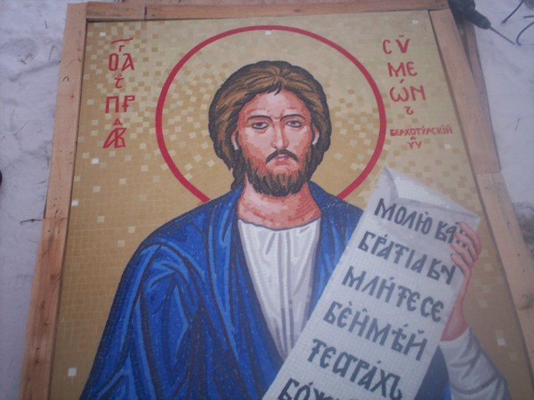
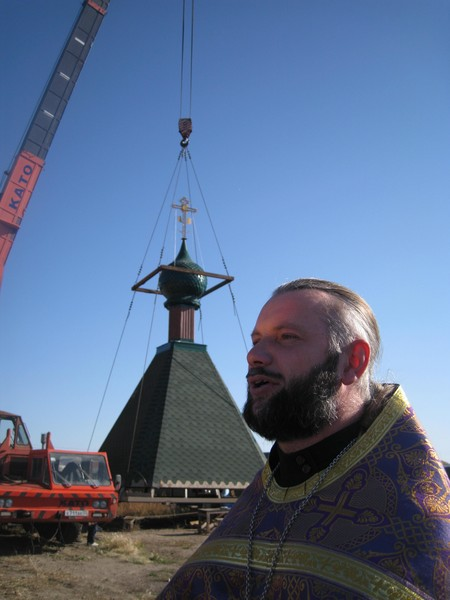

Posted by admin | Posted in Новости | Posted on 12-12-2010
Метки: строительство, часовня

Кладбищенская часовня в честь Святых Равноапостольных Константина и Елены с. Розовка
Read the rest of this entry »
Кладбищенская часовня в честь Святых Равноапостольных Константина и Елены с. Розовка
Read the rest of this entry »
Строительство храма в 2010 г.
Строительство храма в 2009 г.
Строительство храма в 2007-2008 гг.

31 декабря — это день памяти Святого Праведного Симеона Верхотурского, во имя которого строится храм в с. Розовка. К Престольному празднику 2009 г. приход строящегося храма обрел мозаичную икону своего покровителя. Перед Праздником икону Святого разместили на фасад храма, а на Престольный Праздник ее освятили.
Read the rest of this entry »

29 сентября 2009 г. в с. Розовка состоялось поднятие центрального шатра строящегося храма в честь Святого Праведного Симеона Верхотурского Омско-Тарской епархии.
Read the rest of this entry »
По благословению Высокопреосвященнейшего Феодосия, митрополита Омского и Тарского в 2004 г. первым священником, который начал создавать приход в честь Святого Праведного Симеона Верхотурского в с. Розовка стал отец Дмитрий Гончаров, настоятель Храма Святого Архангела Михаила (Усть-Заостровка).
Значительный вклад в документальное оформление прихода принадлежит отцу Владимиру Новикову. Им же были совершены первые молебны.
Cлужба на фундаменте строящегося храма в честь Святого Праведного Симеона Верхотурского, сентябрь 2007 г.
Первая служба на фундаменте строящегося храма была совершена на Праздник Святой Троицы в 2007 г.
В этот же день настоятелем прихода по благословению Высокопреосвященнейшего Феодосия, митрополита Омского и Тарского назначается о. Иоанн Костюк. И уже осенью совершается первая Литургия в Домовой Церкви собором священников. Под Домовую Церковь поселковой администрацией было выделена часть помещения детского подросткового клуба «Молодость».
Освящение Домовой Церкви сентябрь 2007 г.
В это же время утверждается проект строительства пятикупольного храма, эскиз которого был подготовлен архитектором и иконописцем Владимиром Булгаковым.
Проект строящегося храма в честь Святого Праведного Симеона Верхотурского
Интересна история обретения приходом храмовой иконы Св. Праведного Симеона Верхотурского, предположительно которая написана тобольскими мастерами иконописи.
Она была обнаружена в семейных архивах одного из жителей районного центра Муромцево и передана в местный храм в честь иконы Божьей Матери (Тихвинской), где и хранилась два года.
Настоятель муромцевского храма о. Андрей по случаю открытия Домовой Церкви в с. Розовка передал икону Симеона Верхотурского для строящегося храма. Так по Воле Божьей приход строящегося храм обрел икону своего Святого.
Икона Святого Праведного Симеона Верхотурского
С 2008 г. совместными усилиями администрации с. Розовка и прихожан на Крещение Господне после Божественной Литургии, водосвятного молебна и крестного хода на «Иордан » организуется погружение в прорубь в освященные воды Иртыша.
В настоящее время в Домовой Церкви в честь Св. Праведного Симеона Верхотурского регулярно совершаются по вторникам акафисты и молебны, по субботам всенощные бдения и по воскресениям Божественная Литургия.
С лета 2008 г. формируется молодежный православный историко-краеведческий туристический клуб «3-тонны». Ежегодно участники клуба во главе с настоятелем розовского прихода по благословению Высокопреосвященнейшего Феодосия, митрополита Омского и Тарского совершают паломнические сплавы в честь Священномученика Сильвестра архиепископа Омского, участвуют в областных слетах палаточных лагерей и других мероприятиях поселка и района.
Ориентировка паломникам: Омский район, с. Розовка (около 40 км от города в сторону Ачаирского монастыря по Черлакскому тракту), маршрутное такси и автобус от ост. ДК им. Лобкова (маршруты носят название «ДРСУ Розовка», «Ачаир»). Выходить на Первой улице.
Адрес строящегося храма: Омский район, с. Розовка, ул. Спортивная, 20.
Материал подготовила Шведова Елена
Индекс почтового отделения с. Розовка: 644508
Режим работы Розовского почтового отделения:
Вт.-сб. с 09:00-18:00
Обед: с 13:00-14:00
Выходной: вс., пн.
В Розовке имеется отделение Сбербанка (рядом с Сельсоветом)
Режим работы:
Пн-пт. с 09:00-17:40 ч
Обед: с 12:00-14:00
Выходной — сб., вс.


{kind=link}
{kind=link}
{kind=link}
{kind=link}
{kind=link}
{kind=link}